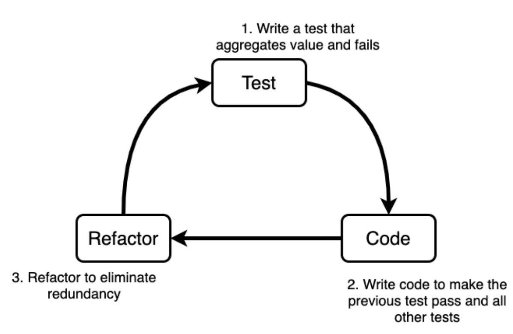

Unity FPS game with TDD
By Julia Naomi Boeira.
Associated repository: https://github.com/naomijub/FPSwithTDD

Target Audience
For a long period of time, the gaming industry seemed resistant to agile methodologies, sadly, it seems to come from a few frustrated attempts to introduce agile methodologies in daily routines. I believe that this failed attempts happened because people did not try to adapt the frameworks to their worlds or people tried to introduce "the agile" framework as unique and undivisible thing, which made people see the framework as more than it really is and forgetting from where agile methodologies come from, the Agile Manifesto.
- Individuals and interactions over processes and tools
- Working software over comprehensive documentation
- Customer collaboration over contract negotiation
- Responding to change over following a plan
What seems to have been the most common error is the inversion right in the first line of the manifesto, since it seems that the game development world was going "processes and tools over individuals and interactions". More than that, the industry took processes, tools and frameworks in a quite rigid and inflexible perspective, which is pretty sad, being such a dynamic industry. There was even an article, Agile Game Development is Hard by Rob Galanakis, in 2014, demonstrating the anti-agile mindset. Happily, in the past 5 years I have seen a great amount of change in this context, which makes strategies like TDD for game development something more useful and welcomed in a more friendly manner to the gaming industry.
Besides that, I see TDD (test driven development) as a manifestation of the second principle in the manifesto. I believe this is due to the fact that a well tested code can be seen as documentation, proves the code is working and it has a minimal standard of quality.
Having said that, I believe this book is great for everyone that wishes to improve their coding skills, learn TDD and learn Unity Development. Beginners will have the opportunity the learn step by step how to develop a game with detailed explanations over the language and tooling used, more advanced users will have a nice alternative to learn TDD, indie developer will be able to improve their testing skill, and for big studios this book is an opportunity to improve the general code quality and challenge their developers.
Understanding TDD and other Agile practices
- Deepdive into TDD
- What is TDD
- Why use TDD for Games
- When to use TDD
- Learning the TDD Way
- CI, Why does it matter?
- CI for Games
- Introduction to game testing with game engines and setting up a test environment
- Best Practices for Writing Tests
- Summary
Chapter 1: Deepdive into TDD
To understand TDD, which means test driven development, we need to understand the concepts of test to code. Which basically means that we need to have a perspective of what we want before starting developing the game. This has to be done in a way that we know beforehand which tests we are going to write and how we can iterate over them to develop our game. Also, it is important that our tests have a positive impact in our code, as redundant testing doesn't really improve the code quality, therefore, simply writing a test that passes right away doesn't improve our code, even though it can be useful sometimes outside the TDD flow. This means that a meaningful test has to break the current game flow, by failing, and the code that we write from that point on should be the minimum for our test to start passing. More than that, just passing is not enough, it should pass the test that we have written and not break the other tests that we wrote. There is a famous image on TDD that is sometimes called the mantra of TDD "red (test), green (code), refactor' which I would like to explain:

Unfortunately this image may not be very intuitive, so let's explain it a bit.
- We need to understand our test cases and what we want from them.
- We do that by writing the smallest test that fails and aggregates value to our game, considering how we planned for the game to be developed.
- Having a failing test is something that we can't accept, so we write the minimal amount of code that makes our failing test pass without failing all of our other tests.
- Now we can go further and refactor our code. Refactoring means that we will look for code smells, redundancies and things we can eliminate, so that we can improve the code quality. To do that we need to make sure all our tests keep passing.
- Now we can loop back to step 2 until there are no more test cases.
- At last, all our test cases are done. We can check if it integrates and it is functional within our code.
- Go to step 1 again for other test cases.
Chapter 2: What is TDD?
TDD is a software development practice developed by Kent Beck alongside the eXtreme Programming (XP) methodology. TDD's idea is to develop a system based on its test cases. Therefore, you should elaborate your test cases and then elaborate them into tests in such a way that the planned functionality should evolve from the demands of each test written. As the code solution is implemented right after the test is written, TDD is a continuous cycle of testing and coding.
TDD has a few important characteristics:
- Frequently execute your tests. If your tests are being executed frequently it is easy to know the general state of the code. This doesn't mean that you need to run all your test pipeline all the time, but it is useful to run them every time you finish a feature.
- Keep your code tested. It is important to keep your code tested, especially at the unitary level. The smallest code units you test, the easier will be to fix bugs.
- Think of a failing test as if it was a failing project build. If a developed code makes its respective test fail or even another test fails, you should deal with it as if you are putting a bug into the game. Some people just delete the written code and try again from scratch. Finding what works for you is crucial.
- Keep your tests simple. Complex tests may not be testing the units they were supposed to test.
- Test cases should be independent from one another. Each test should only test its unit, component, functionality or how two specific parts work together.
Some advantages of TDD can be:
- Code becomes cleaner, more readable and more maintainable.
- A more modular code. Which also increases code testability.
- You will have a higher test coverage.
- You will possibly find one of the simplest solutions to your problem.
- You will have less defects.
- You will have less bugs.
- You will have extensive documentation of what your code does.
- A more eloquent design of the code.
As there is no silver bullet, here are some disadvantages of TDD:
- TDD won't prevent bugs that your test cases introduced or that you have not thought of, this is why things like regression tests can help.
- To some people, TDD is a slower process. In my opinion, if you don't do TDD you will be required to work more finding bugs.
- All team members got to do it. If only one member includes untested code, that can become a problem to refactor and control in the future. Code reviews help with this item.
- When a requirement changes, your tests need to change as well.
Why are there so many poorly tested codes?
Would you use a bullet proof vest that was not tested? If not, you should start seeing test development the same way. Let me tell you a small secret, a bunch of years ago I did not like TDD, unit testing and many other test cases that I, as a software engineer, should be writing. I would mostly test code, global variables and local variables printing data to the terminal, and now, here I am evangelizing in the name of TDD. What happened?
As a game developer, in the past, I wrote many untested lines of code, and the result was that I always had to rewrite part of it, sometimes due to some manual testing and most often due to code so complex that was unreadable. This became one problem less the moment I adopted TDD. Of course, in the beginning I took way longer to write my code, but in general there was no need for rework and I could deliver more value through my code.
Besides that I realized a few reasons why testing was so poorly made in the gaming industry and the software industry as a whole:
- If tests are not easily comprehensible, bugs can be added to the program generating catastrophical situations.
- Tests are usually written after the code, which is a problem because whoever wrote the algorithm doesn't want to go back to coding if from the beginning to find a solution, so the test is usually made to fit the current code.
- Tests are usually written by people different from the ones that wrote the code, which can mean that they may have the wrong interpretation of what the code should do or even are just thinking of different requirements. Also, it is harder to test unitary blocks.
- If the person that writes the tests writes it based on documentation or artifacts, any upgrades can make the tests become obsolete.
- Non automated tests don't run frequently and may not be executed the same way each time.
- Fixing a bug in one place may cause a problem elsewhere. Test coverage guarantees some safety over this.
And TDD may solve all of these problems as the person that develops the code will test it first, guaranteeing test coverage and testability. It is easier to execute tests in an automated manner. Bugs can be identified quickly and with punctuality, which will be guaranteed by test coverage. And at last, whenever the code is delivered, the tests are delivered alongside it, which improves maintainability.
Chapter 4: When to use TDD?
As I said before, TDD is not a silver bullet, but it does have a strange effect on you. Although it is not always necessary, once you get used to it, you will probably do it anywhere. TDD can greatly be applied to the following scenarios:
Browser front-end development. Whenever someone is developing a web page, it may be very interesting to develop it with TDD as web pages usually have different usage possibilities and you want to make sure that the user will have a great experience using it. Also, it is important to make sure your system is able to handle the data received from the back-end and correctly renders it. Here you can have a whole pyramid of tests with unit tests, integration tests, functional tests, UI tests.
Microservices and back-end. They run the web, but now imagine your bank doesn't test how your money will be handled and saved. This means that any bug can cause you to lose a great amount of money. Backends are the origin of TDD usage and they are critical for games as well. Most common tests for backends are unit tests, integration tests, contract tests and some end-to-end testing.
Mobile apps. This is very similar to front-end requirements, as mobile apps can cause your user to have a terrible experience, but more than that, they are constantly updated, so having a good CI is important for them.
Games. Well, if we test UIs for mobile and for browsers, why can't we test UIs for games? There is the random state factor, but this can easily be solved by pure functions which would allow our logic functions not to have side effects and they will generate a precise response and a precise UI. With precise states for UIs we can define how we want our game UI to look like. Also we can test the connection to our servers and how they affect the general game state. Again, you can have a whole pyramid of tests with unit tests, integration tests, functional tests, UI tests.
IoT and Embedded. Just imagine the chaos it would be if your television had a bug that turned on your microwave, which you left something inside, when you are not expecting it to happen. Or just imagine a critical bug failure in the airplane you're flying. Testing these for unit level and integration level seems quite important.
But I said that it couldn't be applied to all scenarios, right?
Famous and known algorithms. You can use TDD to solve a merge sort algorithm, but you probably won't get to a better solution than the classical algorithm. So, although testing can give you confidence that you wrote the correct solution/algorithm, TDD won't actually help you to find the best solution every time. Though it does help to have a cleaner code.
Research and Development projects. These kinds of projects usually are just spikes or proof of concepts, and they are made just to prove a point or show a new technology. Although testing them could be beneficial, for later usage, it can be time consuming.
There are more cases for both sides, but I see this as the most important scenario to discuss TDD.
Chapter 5: Learning the TDD Way
Now we can start speaking about TDD for games, so in this chapter we will learn about test pyramid and test levels, how to think of test cases and what would be a minimum viable game from a testing perspective.
First of all I would like to start with one definition of test levels that I find the most interesting. However there are many more and many that are different from mine, you and your team should reach a consensus over this topic before starting.
- Unit testing. They should be testing a fundamental part of the game like a logic, a function, a routine and some controlled behavior inside a namespace or a class. They are the most common type of tests in TDD books and they usually use some variant of the word ASSERT to define the logical boundaries of the test.
- Functional testing. They test if a function or an object reacts to some behaviour in an expected manner from a black box perspective. So they usually do this by using some input and observing the output.
- UI testing. Sometimes they are put together with the functional testing, but they represent a test that takes a screenshot and compares it with an expected image.
- Component testing. They test if the execution of a game object, a package, a subroutine or an internal program are working as expected. A good example would be to test the reactions of a NPC when reacting to the player.
- Integration testing. This can be a little confusing in the game industry as many people call component tests integration tests as well, sometimes even functional tests. But in general it tests the communication of our game with external resources, like servers, kinect, controller and audio. Testing player input can be a great example.
- End-to-end testing. I would say this is the simplest test for games, it would be an automated gameplay test.
One very important aspect of TDD is the test pyramid, as it represents loosely how much of each test your project should have. In a general sense the more unitary and low level your test is, the more of this kind you need to have, while tests that take longer or are more high level should have less amount. This is due to the fact that unit tests are way cheaper than integration tests, which are cheaper than end to end and UI tests. So the pyramid base should contain a lot of Unit tests, followed by a bunch of integration tests, a few functional and UI tests and very little end-to-end tests. Projects can separate tests by functionality, classes and context or by pyramid level. Which one to choose depends on what you and your team prefer and both of them are valid.
Imagining simple test cases for a game
Talking about a minimum viable game I was inspired to find out which would be the test cases for a movement mechanic in a platform 2D game and what a player would expect from it. For example, in the last project I participated in, a few colleagues of mine were having trouble understanding that we should first define and validate the mechanics that we want so that we could start fine tuning them. The result was that they didn't listen to me, were only preoccupied with the fine tuning of the first mechanic, which resulted in the fact that they almost blew the deadline and the result was terrible because we had one good mechanic and a lot of terrible mechanics.
Considering the basic move mechanics of a platform 2D game, like Mario, we would have walk, jump and fall mechanics. So how could we test them?
Walk Mechanic
| Feature | Character must move alongside the X axis | |--- |--- | | Input | Keyboard input | | Test Case 1 | Any key is pressed on the keyboard. | | Test Case 2 | Directional keys were pressed on the keyboard (left/right or a/d) | | Test Case 3 | When the left key is pressed the character moves left | | Test Case 4 | When the right key is pressed the character moves right | | Test Case 5 | When any other key is pressed, nothing happens in the X axis. | | Test Case 6 | Character collides with walls | | Output | If the new position is as expected, the test passes, else it fails. |
Jump Mechanic
| Feature | Character must jump | |--- |--- | | Input | Keyboard input | | Test Case 1 | Spacebar was pressed | | Test Case 2 | When spacebar is pressed character moves alongside the Y axis | | Test Case 3 | The character moves correctly from bottom-up. More than one assert may be needed for this test. | | Test Case 4 | The character moves correctly, when falling from the jump, from top-bottom. More than one assert may be needed for this test. | | Test Case 5 | When a directional key is pressed, the jump occurs alongside the X axis as well. | | Test Case 6 | Verifies if a jump with directional keys pressed is parabolic. | | Output | If the new position is as expected, the test passes, else it fails. |
Usually a complete jump requires at least 5 assertions to check for correct movement.
Fall mechanic
| Feature | Character must fall into holes | |--- |--- | | Input | Character collides with scene | | Test Case 1 | Character collides with floor | | Test Case 2 | Character collides with aerial blocks | | Test Case 3 | Character falls into holes (gravity testing) | | Test Case 4 | Character falls into holes following a horizontal launch. | | Test Case 5 | Same as 4 but from aerial blocks | | Output | If the new position is as expected, the test passes, else it fails. |
Engineers may find very different ways to solve these test cases. However, the most important part is to keep the test cases simple and the test resolutions and assertion even simpler. If any step gets hard or confused, a good strategy is to take a step back to the intermediary test cases and try to grow the concept from them. This also helps to refactor and evolve the code.
So now, we can consider that you already know the basic principles of TDD and we can start developing our own game.